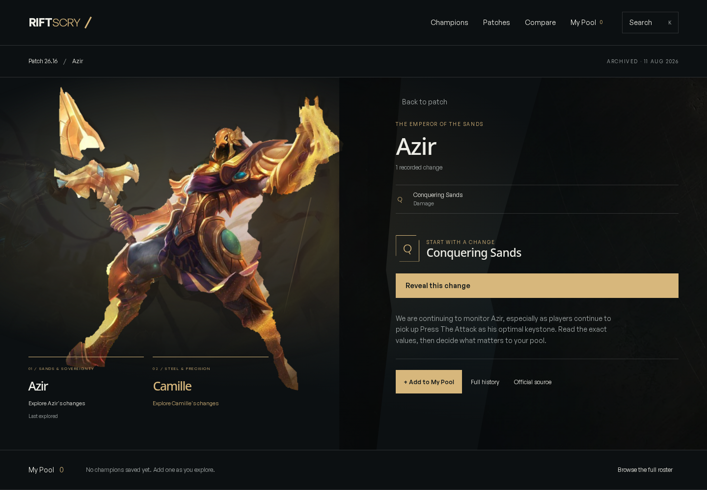
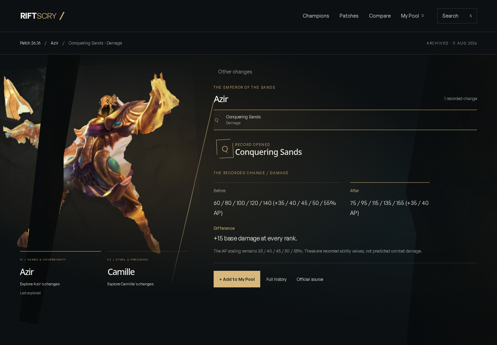
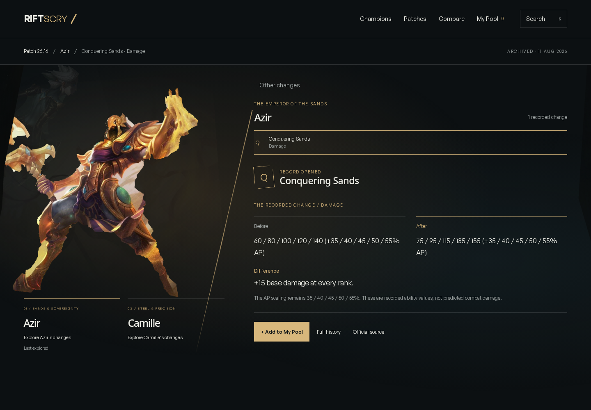
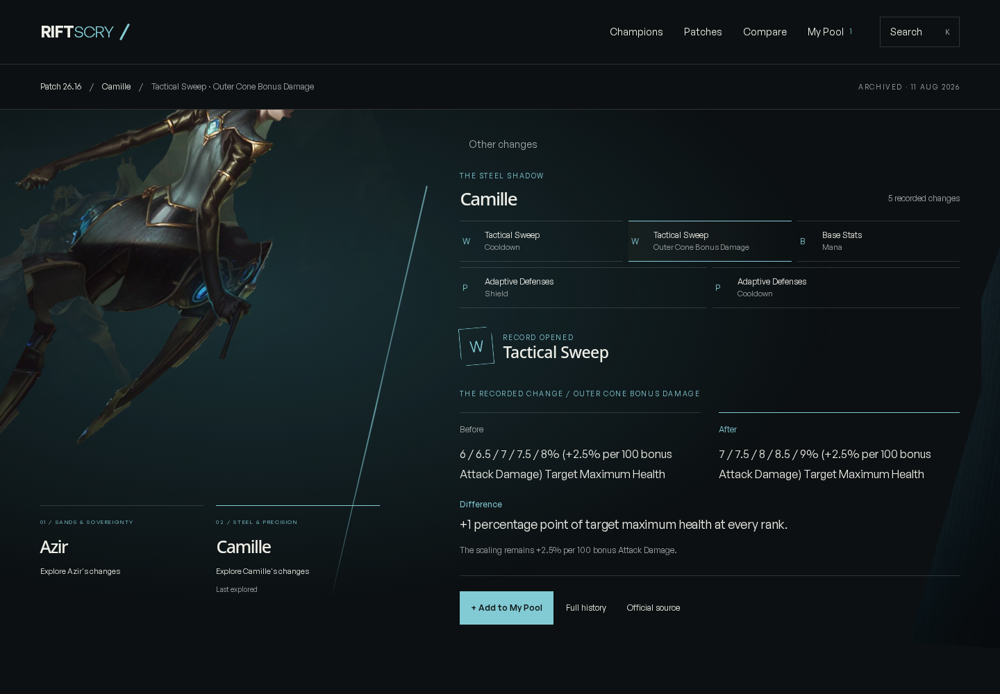
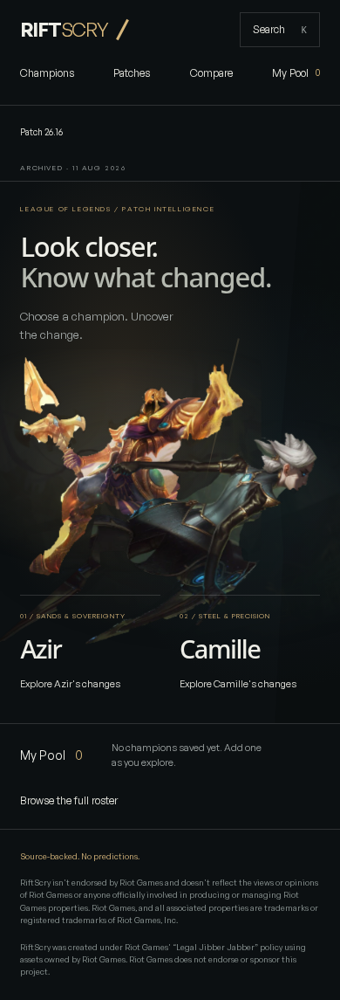
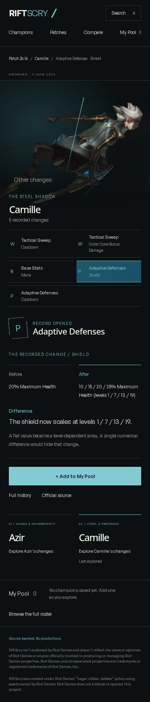

Uncovering a change.
V4 implementation review. Recorded from the actual production build served by the repository's browser-test server at http://127.0.0.1:4321/, not a pre-rendered concept animation.
Render mode: full-motion GSAP-driven CSS 2.5D, alpha-masked source art, independent textured perspective planes, and accessible HTML. No WebGL, generated character footage, rigged figures, or audio.
The unedited capture opens Azir's real Q change, saves Azir, directly selects Camille from the open record, reveals Tactical Sweep, opens its other actual change without resetting, saves Camille, returns to the patch, and removes Azir from the real pool. A reload confirms Camille remains saved.
Start / middle / end



Another branch, another record

Portrait and reduced motion


Checks and limits
- Type-check, production build and 193 unit tests passed.
- 15 desktop-project browser checks passed, including explicit Chromium touch, keyboard, direct links, history, pool reload, interrupted navigation and missing-artwork recovery.
- The complete suite is not green: 12 WebKit cases could not launch because system libraries are missing. The installer also failed because this environment has no apt-get. Nine checks were skipped by existing visual/keyboard mode rules.
- Isolated production measurements report zero layout shift. Frame pacing is not uniformly 60fps in the VM; desktop p95 frame time was approximately 67ms. These are lab results, not field Core Web Vitals or physical-phone measurements.
- The host-managed preview was unavailable during this turn (502 / no listening server; preview URL lookup returned null). Production-browser recordings are evidence of the built app, not proof that the host preview has recovered.
- Source-art masks retain painted edges and baked lighting. Two curated branches are authored; other champions use the existing product tools.
- Riot registration and feature-audit status requires owner confirmation before public release or monetization.
RiftScry isn't endorsed by Riot Games and doesn't reflect the views or opinions of Riot Games or anyone officially involved in producing or managing Riot Games properties. Riot Games, and all associated properties are trademarks or registered trademarks of Riot Games, Inc.